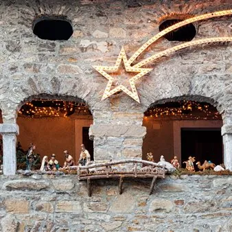

mar 8 dic
Treno storico Treno dei Presepi e dei Mercatini di Natale 2026 - SOLD OUT
Locomotiva a vapore e diesel Il treno dei Presepi e dei Mercatini di Natale conduce i passeggeri da Gemona a Sacile lungo la storica ferrovia, fermandosi a Poffabro in occasione dei presepi e dei mercatini di Natale. Programma: Il treno dei Presepi e dei Mercatini di Natale…
 Indicazioni
Indicazioni
- Costi e prenotazioni
- Costo non indicato · Prenotazione non indicata
- Programma
- Programma da verificare. Apri la fonte ufficiale per orari e possibili aggiornamenti.
- In caso di maltempo
- Nessuna indicazione specifica pubblicata.
- Note
- Acquisito automaticamente dalla fonte.
L’EVENTO
Descrizione completa
Locomotiva a vapore e diesel Il treno dei Presepi e dei Mercatini di Natale conduce i passeggeri da Gemona a Sacile lungo la storica ferrovia, fermandosi a Poffabro in occasione dei presepi e dei mercatini di Natale.
Programma :
Mattina
Poffabro
Nella suggestiva scenografia del borgo si riscopre la Natività, grazie ai numerosissimi presepi artigianali che adornano ballatoi, cortili e finestre di tutto il borgo. L'iniziativa rappresenta un appuntamento tradizionale delle festività, si caratterizza per l'incredibile produzione di presepi che gli abitanti del borgo allestiscono nelle vie, nelle finestre e in ogni dove. La suggestione dell'evento viene enfatizzata dalla naturale cornice fornita dalla bellezza e dall'architettura caratteristica di Poffabro, che d'inverno si arricchisce di una naturale scenografia innevata.
Pomeriggio:
Sacile
Sacile illumina il Natale. Si rinnova l'appuntamento con il Natale in città: allestimenti, decorazioni, alberi e luminarie nei luoghi più suggestivi di Sacile e lungo le principali vie dello shopping, avvolgeranno il centro città in una magica atmosfera natalizia.
All’arrivo, trasferimento a piedi in centro storico dove è possibile trovare:
Lungo I Binari della Nostra Infanzi a-mostra modellismo treni in Via Garibaldi. Ingresso libero
Mercatino dell’Avvento con le creazioni di hobbisti ed artigiani vie del Centro storico
La Rosa di Sacile , a cura di Agrizero
“… e cantan i pastori” – dalle ore 16.00 canti natalizi itineranti lungo le vie a cura del Coro Livenza
Esclusivo per i passeggeri del Treno Storico:
ingresso gratuito alla mostra internazionale Urban Legends. Haring, Warhol, Banksy, Mr. Brainwash, Koons e la conquista dell’immaginario contemporaneo.
Un percorso che attraversa oltre mezzo secolo di arte e cultura visiva, mettendo in relazione generazioni apparentemente lontane. Dalla rivoluzione della Pop Art fino alla Street Art. I tre piani di Palazzo Ragazzoni diventano tre capitoli di un unico racconto. Cambiano gli artisti, le epoche e i linguaggi, ma rimane una domanda: quando un’opera smette di appartenere soltanto all’arte e diventa parte della nostra cultura? Urban Legends comincia da qui. Dal momento misterioso in cui un’immagine entra nei nostri occhi e, senza che ce ne accorgiamo, decide di restare.
Palazzo Ragazzoni, Viale Zancanaro 4
Accesso contingentato ore GRUPPO A 14.30-GRUPPO B 15.00-GRUPPO C 15.30-GRUPPO E 16.00- GRUPPO F16.30
I passeggeri riceveranno a bordo del treno un voucher valido per l'ingresso gratuito, sul quale sarà indicata la fascia oraria di accesso loro assegnata. L'attribuzione dell'orario d'ingresso avverrà in modo casuale, al fine di garantire una distribuzione equilibrata dei flussi di visita, e non potrà essere modificata o contestata.
Dettagli sul pranzo :
Pranzo libero nei locali del centro o presso le Casette del Gusto , veri e propri stand enogastronomici a tema natalizio allestiti in corte Palazzo Ragazzoni.
INFORMAZIONI DI SERVIZIO AI PASSEGGERI:
Si raccomanda di seguire attentamente le indicazioni sul punto di fermata e di prestare attenzione agli orari di ripartenza delle navette
Orari del treno:
Andata: Trazione Vapore GEMONA DEL FR. 07:30 Forgaria B.A. 08:17 Maniago (09:07) 13:02 SACILE 13:56
Il treno storico arriverà alla stazione di Maniago alle ore 09:07. Sosta a Maniago (Poffabro) dalle 09:07 alle 13:02.
Ritorno: Trazione Diesel
SACILE 17:50 Maniago 19:02 Forgaria B.A. 20:11 GEMONA DEL FR 21:05
Andata e ritorno in treno storico
Adulti 15€;
Ragazzi (dai 4 ai 12 anni non compiuti) 7,5€;
Bambini (dai 0 ai 4 anni non compiuti) gratis senza riservazione del posto a sedere
BIGLIETTI IN VENDITA DAL 26 NOVEMBRE ( fascia oraria inizio vendite 12.00- 13.00)
IL PROGRAMMA
Programma e orari
Appuntamenti raccolti dalle fonti elencate. Dove manca un orario, non è ancora disponibile in questa scheda.
Programma pubblicato
- Dal 2026-12-08 al 2026-12-08
INFORMAZIONI UTILI
Prima di partire
- Controllare la fonte prima di partire.
ORGANIZZAZIONE